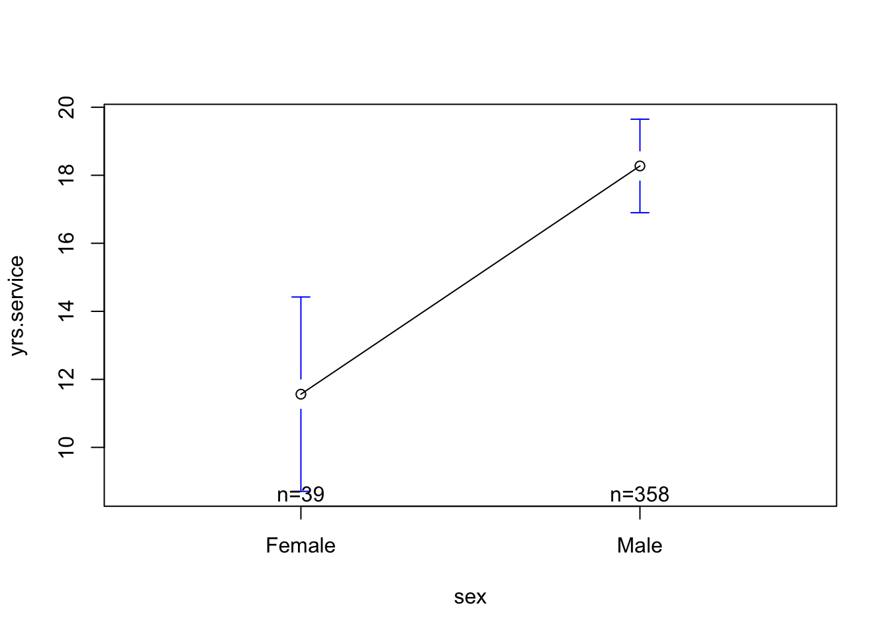

Salaries Dataset. “The 2008-09 nine-month academic salary for Assistant Professors, Associate Professors and Professors in a college in the U.S. The data were collected as part of the on-going effort of the college’s administration to monitor salary differences between male and female faculty members.”
- salary : the salary of the professor, in cold, hard, US American Dollars.
- yrs.service : the years of service the professor had at the college.
- sex : whether the professor was Male or Female
Graph of Model 1
plot(salary ~ yrs.service, data = Salaries)abline(mod1, lwd =5)
Diagnostic Plots
par(mfrow =c(2,2))plot(mod1)

Graph of Model 2
plotmeans(salary ~ sex, data = Salaries, connect = F)
(zewei) responses may be biased (self-insight / self-enhancement)
(becky) double-barreled questions : “how often do you experience slow loading or broken links”
Power Tests
what’s the point, professor?
Power : the probability that you would “correctly” observe the relationship between two variables if the relationship actually exists (if the null hypothesis were NOT true).
Reasons to Calculate Power :
Post-Hoc Power : You did a study, and want to further contextualize your guess about how much sampling error influenced your results.
Power Planning : You are planning to run a study, and want to know how many people to recruit to have the highest probability of observing the “true” effect (if it exists.)
goal : you want power to be HIGH
DISCUSS : what could we do as researchers to increase power???
Notespoilers
the effect size increases : the bigger the difference, the more likely you’ll detect it.
your sample size increases : the more people, the less sampling error, and the easier it is to have confidence that any difference you found is not just chance.
you increase the threshold for rejecting the null hypothesis : if the probability of rejecting the null hypothesis = 10%, then your power increases.